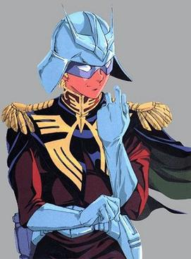

Introduction to 6 Gundam Characters(3 of which are not the same guy, and 2 of which are totally not the same guy either)
 Casval Rem Deikun(top left), the son of Side 3 Politician Zeon Zum Deikun, was a key character in Mobile Suit Gundam THE ORIGIN, as well as mainline UC and beyond, until around the UC0100s, where he faded into obscurity.
Casval Rem Deikun(top left), the son of Side 3 Politician Zeon Zum Deikun, was a key character in Mobile Suit Gundam THE ORIGIN, as well as mainline UC and beyond, until around the UC0100s, where he faded into obscurity.

Char Aznable(top right), better known by his moniker, "The Red Comet(Of Loum)", was an ace pilot in the One Year War, and held much political influence
for those living in space, dubbed as "spacenoids". He had a rivalry with EFF Pilot Amuro Ray, better known as "The White Devil" that began in the One Year War, and continued on until their eventual disappearance in UC.0093.
 Quattro Bajeena(2nd left) was an AEUG pilot who fought in the Gryps War, but disappeared by the end of the conflict, where the tinder for the First Neo Zeon War will be lit. He was a mentor to Kamille Bidan and is TOTALLY NOT CHAR AZNABLE.
Quattro Bajeena(2nd left) was an AEUG pilot who fought in the Gryps War, but disappeared by the end of the conflict, where the tinder for the First Neo Zeon War will be lit. He was a mentor to Kamille Bidan and is TOTALLY NOT CHAR AZNABLE.
 Judau Ashta(2nd right) is a MS pilot who fought in the 1st Neo Zeon War in the Double Zeta(ZZ) Gundam, but moved away to Jupiter after the war's end.
Judau Ashta(2nd right) is a MS pilot who fought in the 1st Neo Zeon War in the Double Zeta(ZZ) Gundam, but moved away to Jupiter after the war's end.
 Grey Stoke(bottom left) is a veteran MS pilot who appears in Mobile Suit Crossbone Gundam: Skull Heart. He pilots the Gump, a Mobile suit that has been repaired extensively with other MS parts from his years of battles and foraging in deep Jupiterean space.
Grey Stoke(bottom left) is a veteran MS pilot who appears in Mobile Suit Crossbone Gundam: Skull Heart. He pilots the Gump, a Mobile suit that has been repaired extensively with other MS parts from his years of battles and foraging in deep Jupiterean space.
 The Haro, depending on which origin one perceives as canonical(bottom right), was either a mass-produced toy robot modified by Amuro Ray and more Gundam protagonists, or wholly Ray's invention, which he later developed into an MP, open-source companion robot.
The Haro, depending on which origin one perceives as canonical(bottom right), was either a mass-produced toy robot modified by Amuro Ray and more Gundam protagonists, or wholly Ray's invention, which he later developed into an MP, open-source companion robot.